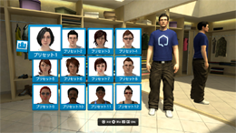
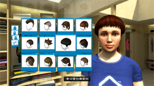
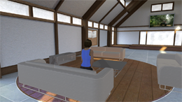
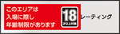
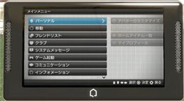

The Wayback Machine - https://web.archive.org/web/20101127104024/https://playstationhome.jp/news/update/20081120.html
バージョン1.00 アップデート
アップデート概要
- クライアントバージョン： 1.00
- バージョンアップ予定日： 2008.11.20
機能追加
- プリセット内容が複数変更されました。
- 
- 新たなヘアスタイルが4 種類（男性2 種類、女性2 種類）追加されました。
- 
- 以下のジェスチャーが、「その他」カテゴリに追加されました。
- 座る（立っている状態でのみ選択可能）/立つ（座っている状態でのみ選択可能）
- クラブ機能が追加されました。
- クラブは同じ目的を持ったアバター同士の集まりです。
-
- クラブを作成するには購入が必要です。
- ※ クローズドベータテスト期間中は無料となっております。
- クラブは1 アカウントにつき1 つ作成できます。
- クラブに参加できる人数の上限は自身も含めて32 人です。
- 自身が作成したクラブも含めて、参加できるクラブの数は最大で5 つです。
他の人が作成したクラブに5 つ参加している場合、自分でクラブを作成できませんのでご注意ください。
- サブリーダーを任命することができます。
- ※クラブの作成方法については、下記をご参照ください。
-
- 【WEB サイト】 リファレンスガイド > 「クラブ」
- 【ゲーム】 メニューパッド > 「ヘルプ」 > 「クラブ」
- ※クラブは、一定期間ごとに費用が発生するアイテムです。ただし、現在はクローズドベータテスト期間中のため無料で使用することが可能です。
- クラブハウスが追加されました。
- クラブハウスは、クラブメンバーが集まれるプライベートスペースです。
-
- クラブを購入することで、クラブハウスを所持することができます。
-
- クラブハウスには最大で32 人(自分を含む)入ることができます。
- ※所属するクラブメンバー以外はクラブハウスに入ることはできません。
-
- クラブハウスには、家具を設置することができます。
- クラブハウスには、メッセージボードがあり、利用することができます。
- ※書き込みはクラブハウスのリーダー・サブリーダーのみが行うことができます。最大で4 つのメッセージを表示させることができます。
- 
- ※クローズドベータテスト終了と同時に、全てのクラブ、クラブハウス、クラブは削除されます。あらかじめご了承下さい。
- ゲーム起動・ブラウザ起動に視聴年齢制限（パレンタルロック）がかかるようになりました。
- ラウンジ間移動時に視聴年齢制限（パレンタルロック）が設定されている場合、移動先ラウンジのレーティングが表示されるようになりました。
- 
- ラウンジに年齢による入場制限がかかるようになりました。
- ※ クローズドベータテスト中は、18歳以下のユーザーはPS Home 自体をご利用いただけません。
- PLAYSTATION®3のXMB （クロスメディアバー）、ユーザープロフィールが開くようになり、トロフィー情報が表示されるようになりました。
- ラウンジのデータをダウンロードする際、バックグラウンドでダウンロードができるようになりました。
- ※メニューパッドの「ダウンロード」の項目で、バックグラウンドで行われているダウンロードの進捗を知ることができます。
機能変更・改善
- バーチャルPSP™ (PlayStation®Portable)が、メニューパッドに変更されました。
- 
- マイホームスペースの名称がパーソナルスペースに変更されました。
- パーソナルスペースに招待できる人数の上限が8 人から12 人（自身を含めて）に変更されました。
- アバターカスタマイズ画面のアイコンが複数変更されました。
- アバターカスタマイズ画面の終了方法が以下のように変更されました。
- ×ボタン > 終了の確認画面 > 「アバターのカスタマイズを終了する」を選ぶ（○ボタン）。
- 同じラウンジ内で作成されているゲームセッションが一覧で見られるようになりました。
- ゲームセッション一覧から、任意のゲームセッションに参加することができます。
- ヘルプに「オンラインマニュアル」が追加されました。より詳細なヘルプがWeb ブラウザ上でチェックできるようになりました。
- 以下のダンスが廃止されました。
- フラメンコ/ファンキー/ヒップホップ/ツイスト
- 以下の新たなダンスが追加されました。
- ロックンロール/サルサ/ランニングマン/キャベッジ・パッチ/ボディウェーブ
- 一定時間操作が行われない場合、アバターの頭上に「離席中…」と表示されるようになりました。

- アバターの頭上に「離席中…」と出ている状態で、一定時間操作が行われない場合、自動的にログアウトするようになりました。
- 「フレンドのいる場所へ移動」機能及び「フレンドをここに呼ぶ」機能において、パーソナルスペース及びクラブハウスのみ海外サーバーをまたいで実行できるように変更されました。
- アバターをセーブすると、アイコンにアバターのサムネイル画像が表示されるようになりました。
- ボウリングでアバターに投球モーションが付きました。
- ビリヤードでショットを行う際にパワーが表示されるようになりました。
不具合修正
- ネットワーク接続に関する大幅な修正が入り、接続状況が改善されました。
- ダーツやイベント用オブジェクトの近くでアバターを放置すると、フリーズしてしまうことがあった不具合が修正されました。
- フォントが表示上、一瞬壊れてしまう不具合が修正されました。
- シアタールームで動画が再生されないことがあった不具合が修正されました。
- その他、複数の不具合が修正されました。
既知の不具合
- クラブ機能の「サブリーダーを辞める」を選択しても、「許可されていません」というメッセージが表示され、サブリーダーを辞めることができなくなっています。
- ※サブリーダーを辞めるには、リーダーが「サブリーダーから降格させる」を選択してください。
- クラブハウスに長時間滞在していると、クラブメニューを最新の情報に更新することができず、参加しているクラブがあるにも関わらず、クラブメニューの「参加クラブリスト」欄に「リストは空です」と表示されることがあります。
- ※ PS Home に再ログインすると、「参加クラブリスト」は正常に戻ります。
- アーケードマシンで「勇者のくせになまいきだwww」を起動中に、ラウンジの状況により画面が止まってしまうことがあります。
- ※ PS Homeの次回バージョンアップ時に修正を予定しています。